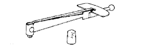

POWER STEERING SYSTEM > PROBLEM SYMPTOMS TABLE > Preparation

| Belt tension gauge | - |
| Caliper gauge | - |
| Cloth | - |
| Feeler gauge | - |
| Micrometer | - |
| Press | - |
| Tape | - |
| Torque wrench | - |
| Vernier caliper | - |
| Vise | - |
| Item | Capacity | Classification |
| Power steering fluid | 1.0 liters (1.1 US qts, 0.9 Imp. qts) | ATF "DEXRON" II or III, or equivalent |
|  | 09025-00010 | Torque Wrench (30 kgf-cm) | - |
 | 09905-00012 | Snap Ring No. 1 Expander | - |